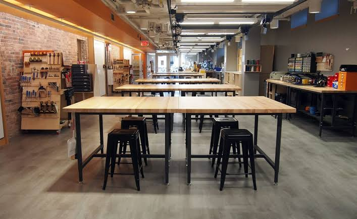

About me
Engineer, maker, and teacher.

Hi, I’m Alex.
I’m a senior studying mechanical engineering at Tufts University, graduating in May 2027. I’m interested in mechanical design, fabrication, and the electronics and software that help turn a mechanism into a working system.
A lot of my time is spent at the Nolop FAST Facility, helping students and researchers make things. I enjoy the process of working through a design, building a prototype, and figuring out what needs to change after testing it.
Where I’ve been working
Nolop FAST Facility
Fabrication Specialist · January 2026–present
Makerspace Engineering & Development Intern · Summer 2026
Fabrication support, equipment training, and design reviews. Over the summer, I built a Raspberry Pi/Flask particulate-monitoring system and helped evaluate changes to the woodshop’s dust collection and air filtration.
Derby Entrepreneurship Center
Teaching Assistant, ENT164: Intro to Making · August 2024–present
I help students build and troubleshoot electromechanical projects, from sensors and microcontrollers to fabrication and system integration.
Center for Engineering Education and Outreach
Teaching Fellow, Engineering Design Lab · Summer 2025
I taught high school students Python, Raspberry Pi robotics, and digital fabrication, and mentored teams as they developed their projects.
Outside engineering
I’m into climbing, photography, DJing, and solving Rubik’s cubes. Teaching and mentorship are also a big part of my time at Tufts, alongside student leadership.
Say hello ↗